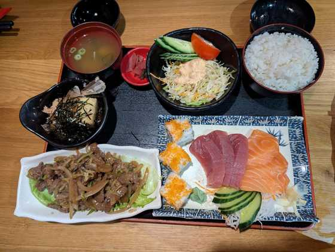
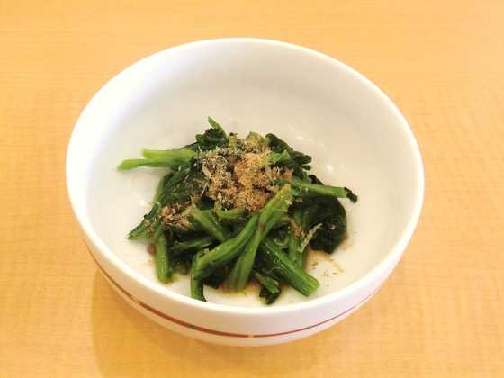
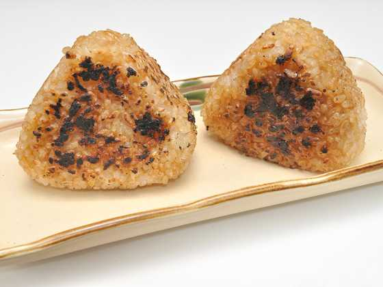
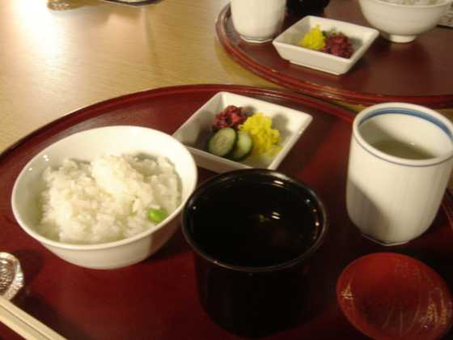
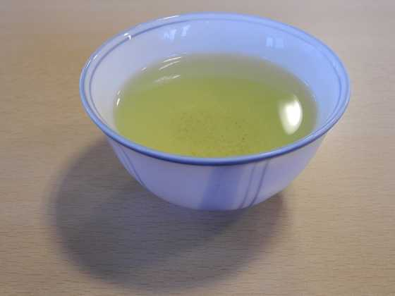

掲載写真はフリー素材のイメージで、店舗の実際の様子ではありません。和歌山県内で撮影された写真は一部のみで、他地域・撮影地不明の写真を含みます。
お店の想い
お店のInstagramの紹介文には、コンセプトとして「からだにやさしいまごころごはん」と書かれています。素材の味を大切に、ひとつひとつ手づくりすることを心がけているとのことです。
「旬の定食」を心を込めて作っていると紹介されています。
店名の意味や由来は確認できていません。このページの色づかいや言葉づかいは、上のコンセプトから制作側が考えたイメージです。





メニュー
旬の定食を中心に提供していると紹介されています。料理名・価格・営業時間などの詳細は準備中です。
定食
詳細は準備中
詳細は準備中
営業時間
準備中
準備中
定休日・価格
準備中
準備中




お客様の声(イメージ例)
以下はデザイン確認用に制作側が作成したイメージ例で、実際のお客様の声ではありません。
イメージ例
野菜の味がしっかり感じられて、食べたあとも体が軽く感じました。
イメージ例
手づくりのやさしい味で、ほっとする時間になりました。
イメージ例
季節のものをいただけるのがうれしいです。また寄りたいと思います。


アクセス
- 住所
- 〒643-0033 和歌山県有田郡有田川町明王寺79-1 エクセレント有田 C
- 電話
- 準備中
- 営業時間
- 準備中
- @yumog_1016
写真クレジット
写真は Wikimedia Commons のフリー素材です(縮小・切り抜き表示の加工あり)。ライセンスの詳細は creativecommons.org をご覧ください。
- yuuki ゆうき(金野裕希) / Japanese rice in Wajima-nuri lacquerware.jpg / CC BY-SA 4.0(撮影地: 日本(青森県周辺とされる))/ 出典
- Douglas Perkins / Miso soup overhead.jpg / CC0(撮影地: 日本(和歌山県))/ 出典
- Asacyan / Tamagoyaki 01.jpg / CC BY-SA 3.0(撮影地: 不明)/ 出典
- Douglas Perkins / Tsukemono dish.jpg / CC0(撮影地: 不明)/ 出典
- Lombroso / Spinach Ohitashi.jpg / CC0(撮影地: 不明)/ 出典
- ノボホショコロトソ / Nikujaga and rice and miso soup.jpg / CC BY 4.0(撮影地: 不明)/ 出典
- Andy Li / Sakura Teishoku - Sakura Japanese Restaurant 2025-07-28.jpg / CC0(撮影地: 英国)/ 出典
- Ocdp / Yaki-Onigiri 001.jpg / CC0(撮影地: 不明)/ 出典
- yajico / Rice, miso soup, tsukemono and tea by yajico in Kyoto.jpg / CC BY 2.0(撮影地: 日本(京都府))/ 出典
- Eric Polk / Daikon radish - Minowase.jpg / CC BY-SA 4.0(撮影地: 米国)/ 出典
- Fumikas Sagisavas / Fresh shiitake mushrooms.jpg / CC0(撮影地: 中国)/ 出典
- Uo3rt / Tsutsui-renkon.JPG / CC BY-SA 4.0(撮影地: 日本(奈良県関連))/ 出典
- LLAAYY / Shōji and Engawa of the former Miura residence 6-10 Reisenmachi Hakata-ku Fukuoka 20240119.jpg / CC BY 4.0(撮影地: 日本(福岡県))/ 出典
- Douglas P Perkins / White cup with green tea in it.jpg / CC BY 3.0(撮影地: 不明)/ 出典